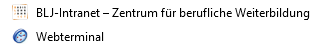

Optimierungspotential für Basislehrjahr Webseite
Im Basislehrjahr haben wir unterschiedliche Webseiten, auf die wir immer wieder zugreifen müssen. Zwei wichtige Beispiele sind, erstens das Webterminal auf dem wir unsere Zeiten speichern. Das bedeutet, jedes Mal wenn wir in die Pause gehen, müssen auf dem Webterminal die Zeiten eingetragen werden. Die zweite häufig benutzte Webseite ist unsere Lernplattform, worauf unsere Aufgaben gespeichert sind und die wir nach dem Erfüllen der Aufgaben benötigen, um zum Beispiel Dokumentationen, oder Screenshots etc. wieder hochzuladen. Im Moment habe ich die ganzen Seiten bei den Lesezeichen gespeichert, um schneller darauf zugreifen zu können.
